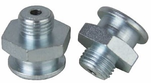
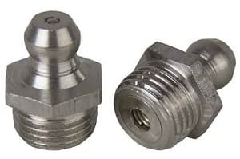
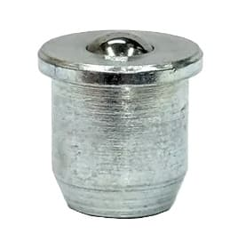
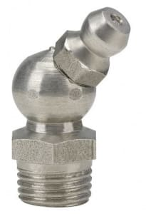

Пресс-масленки
7 типов изделий в категории.

DIN 3404 пресс-масленка

DIN 71412 пресс-масленка прямая (тип A)

DIN 71412 пресс-масленка угловая 45° (тип B)

DIN 71412 пресс-масленка угловая 90° (тип C)

ГОСТ 19853-74 пресс-масленка под запрессовку

ГОСТ 19853-74 пресс-масленка прямая
